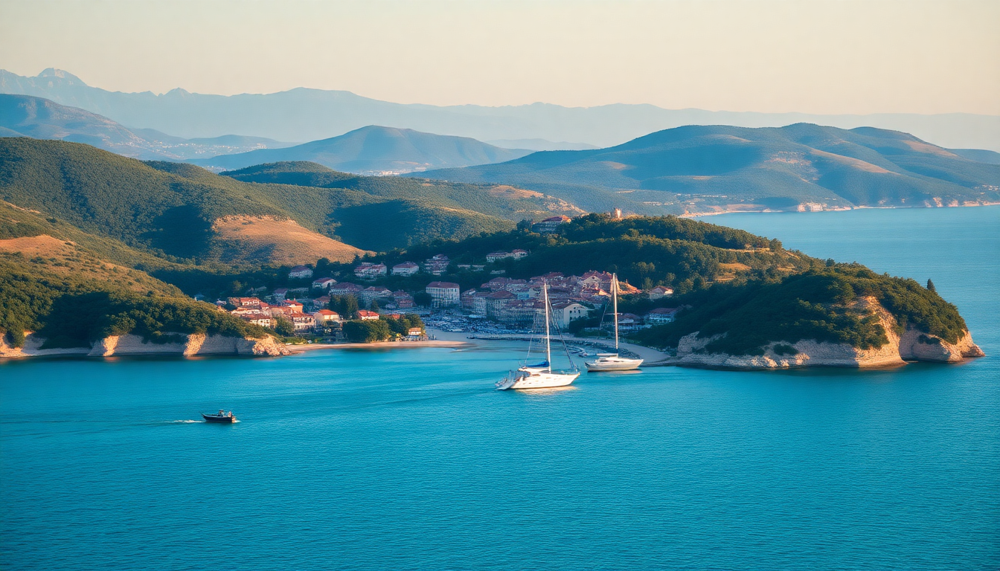

Best Beaches in Croatia: Istria, Kvarner & Dalmatia Guide

We spent three weeks driving the Adriatic coast with a single mission: find the beaches worth the detour. Not the postcard ones packed with sunburned tourists, but the spots where the water is clear, the parking isn’t a nightmare, and you can actually hear the waves. From the pine-shaded coves of Istria to the pebble bars of Dalmatia, here’s what we found.
What are the best beaches in Istria?
Istria’s coastline is less about long sandy stretches and more about hidden rocky coves backed by olive groves and vineyards. The water is absurdly clear, and the crowds thin out fast once you leave the main resort towns.
- Stupice Cove (Premantura) – Just south of Pula, this is a series of flat rocks and pebble patches inside Cape Kamenjak nature park. We parked at the entrance and walked 15 minutes south. The water drops off fast, so it’s great for snorkeling.
- Pegada Bay (Rabac) – A small pebble beach flanked by pine trees. We arrived at 9am and had a whole cove to ourselves. The beach bar serves decent grilled squid.
- Valsaline Beach (Pula) – Closer to town, but still low-key. It’s a mix of concrete slabs and pebbles, with a beach volleyball court that gets busy on weekends.
Honest take: Istria’s beaches are not “wow” dramatic, but they’re reliable. If you want solitude, skip the town beaches near Rovinj and head for Cape Kamenjak. The sunsets there are better than any resort view.
Where should I swim near Rijeka and the Kvarner Gulf?
Kvarner is the underrated middle child of Croatian coasts. It’s rockier than Istria, less hyped than Dalmatia, but the swimming is excellent if you know where to go. The islands of Krk and Cres are a short ferry ride from Rijeka.
- Plaža Vela (Krk Island) – A long pebble beach near the town of Krk. Water stays shallow for a while, good for families. We grabbed burek from a bakery on the main square before heading here.
- Medveja Beach (Opatija) – A pebble beach 10 minutes from Opatija’s fancy promenade. It gets packed in July, but the water is deep and clean. We preferred the rocky inlet just north of the main beach.
- Melin Beach (Cres Island) – A concrete sunbathing platform with ladders into deep water. Quirky but functional. The old town of Cres is a 5-minute walk for coffee.
Honest take: Rijeka itself doesn’t have great beaches — the port is too industrial. Base yourself in Opatija or take the ferry to Cres. The water around Cres is some of the clearest we saw in Croatia.
What are the best beaches near Zadar?
Zadar’s coast is a mix of long pebble beaches and dramatic cliffs. The main draw is the islands — Pag, Ugljan, and Dugi Otok — which are a short ferry ride from the city. We spent three days island-hopping and found the best swimming away from the ferry docks.
- Kolovare Beach (Zadar) – The main city beach. It’s fine for a quick dip after visiting the Sea Organ, but the water is murky near the shore. We wouldn’t make a day of it.
- Soline Bay (Dugi Otok) – A shallow bay on the south side of the island. The water is so clear it looks fake. There’s a small beach bar renting kayaks. Ferry from Zadar takes 90 minutes.
- Ručica Beach (Pag Island) – A pebble beach near the town of Pag. The wind can pick up here, making it popular with windsurfers. We had lunch at Konoba Bodulo in the old town — the lamb peka was worth the drive.
Honest take: Don’t bother with Zadar’s city beaches. Use the city as a base and take the ferry to Dugi Otok or Pag. The catamaran to Dugi Otok runs twice daily in summer — book ahead.
Which beaches around Split are worth the trip?
Split’s coastline is dominated by the pebble beaches of the Makarska Riviera and the islands of Brač and Hvar. These are the most touristed beaches in Croatia, so you need to be strategic. We skipped Zlatni Rat (too crowded) and found better alternatives.
- Kašjuni Beach (Split) – A small pebble cove in the Marjan Forest Park. It’s a 20-minute walk from the old town. Water is clean and the pine trees provide shade. We went at 7pm and had it nearly to ourselves.
- Punta Rata (Brela) – One of the most photographed beaches in Croatia, but for good reason. The pebbles are smooth, the water is turquoise, and the pine forest comes right to the shore. Arrive before 9am to get a spot.
- Lučice Bay (Brač Island) – A quieter alternative to Zlatni Rat. It’s a pebble beach with a rocky cliff on one side. We rented a scooter in Bol and drove 10 minutes east. The water is deeper here, so you can jump off the rocks.
Honest take: Split’s beaches are packed in July and August. If you can, visit in late September. The water is still warm, and the crowds disappear. We had the entire Makarska Riviera nearly to ourselves in mid-September.
When is the best time to visit Croatian beaches?
June and September are the sweet spots. July and August bring peak crowds and high prices. We visited in late June and early September, and both were excellent.
- June: Water is around 22°C. Crowds are manageable. Best for island hopping.
- July-August: Water hits 26°C, but beaches are shoulder-to-shoulder. Hotel prices double.
- September: Water stays warm until mid-month. Fewer tourists. Lower prices.
Honest take: If you can only go in August, stick to the less-hyped beaches in Istria and Kvarner. Dalmatia in August is a zoo.
FAQ
Are Croatian beaches sandy or pebbly? Most are pebbles or flat rocks. True sandy beaches are rare — the only notable one is Nin Beach near Zadar. We recommend water shoes for the pebbles. The water is clear, but the rocks can be uncomfortable to walk on.
Is it safe to swim at Croatian beaches? Yes. Lifeguards are present at most popular beaches in summer. The main risk is the sun — there’s little shade on many beaches. Bring an umbrella or rent a sunbed. We saw a few people with bad sunburns in Brela.
Do I need a car to reach the best beaches? Not always. The city beaches in Split and Zadar are walkable from the old town. But for the best coves in Istria and the islands, a car or scooter helps. We rented a car in Pula and took the ferry to Cres — that gave us access to empty coves the bus tours skip.
Conclusion
- Istria’s best swimming is at Stupice Cove and Pegada Bay — quiet, clear, and shaded.
- Kvarner shines on Cres Island and Krk Island — skip Rijeka’s industrial coast.
- Zadar is a launchpad for Dugi Otok and Pag — don’t waste time on city beaches.
- Split’s Kašjuni Beach and Punta Rata are worth the early alarm clock.
- Visit in June or September — the water is warm, and the crowds thin out.